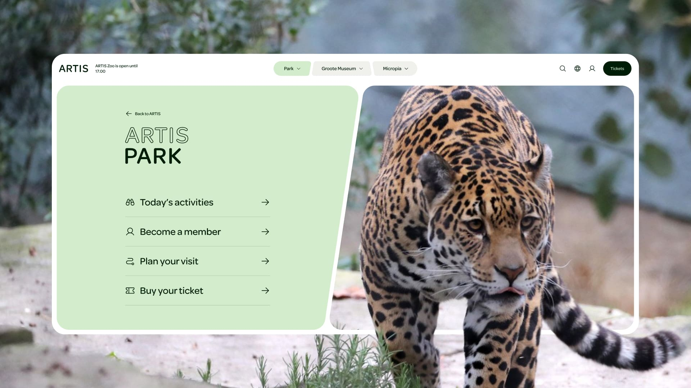

ARTIS — Where
Everything Connects

Challenge
ARTIS is one of the oldest zoos in the world, but it had quietly become three separate things: a zoo, a microbe museum, and a history museum, each with its own logic and audience. The opportunity — and the brief — was to find the strategic thread that connected them, and translate it into a visual identity and digital experience that could hold all three together. The question wasn't what ARTIS looked like. It was what ARTIS fundamentally was.
Approach
The answer was already there in the content: at ARTIS, you encounter nature at every scale, from the smallest microorganism to the vastness of the universe. Connection — between species, between humans, between the microscopic and the cosmic — is the experience ARTIS offers. That became the strategic foundation for the new identity. A visual language drawn from natural forms: cell structures, growth patterns, the shapes found in bark and leaf and water. Fluid, adaptive, and unmistakably alive. Something that could flex across a park sign, a digital ticket, an app screen, and a museum wall without ever losing coherence.


Outcome
A complete rebrand across every touchpoint — website, app, in-park signage, and printed materials — unified under a single identity for the first time. Active users grew by 50–60% following launch, donations increased by 153%, and the app reached over 5,000 downloads in its first two months. The work was recognised with a DIA Gold Award and a Lovie Award Bronze — and the DIA jury praised it as a strong example of how a new identity can contribute to the unification of an organisation. Which was precisely the point.